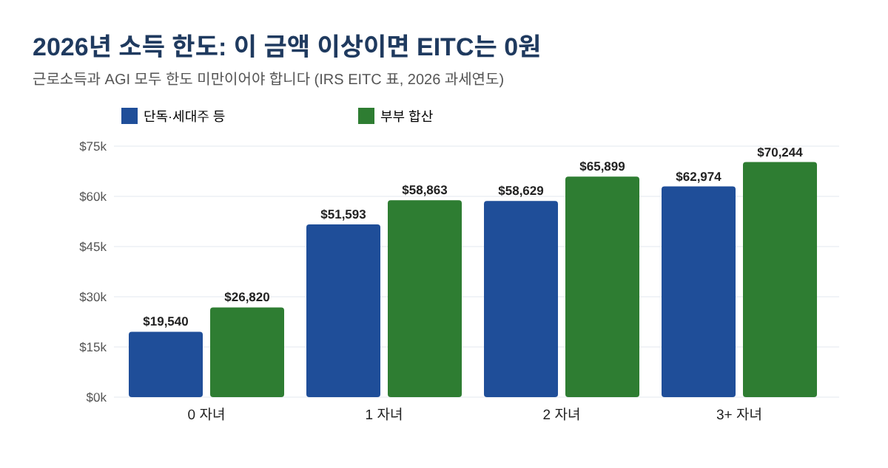
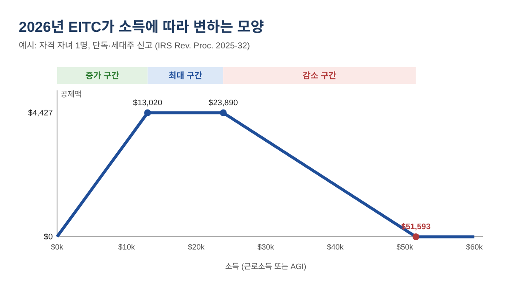
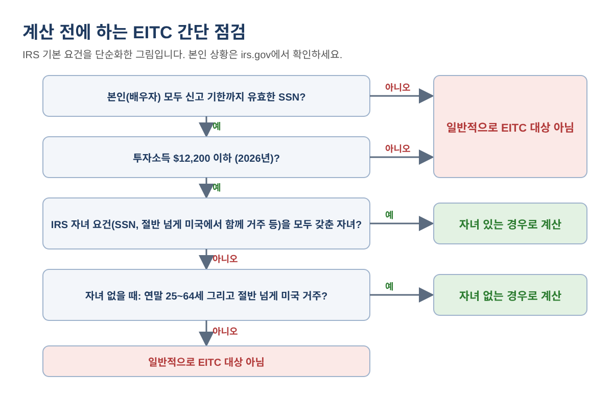

2026년 근로장려세제(EITC), 자영업자도 직접 계산해 보는 방법
연말이 되면 "올해 EITC를 받을 수 있을까, 받는다면 얼마쯤일까?"라는 질문을 많이 하십니다. EITC(Earned Income Tax Credit, 근로장려세제)는 일을 하면서 소득이 낮거나 중간 정도인 분께 주는 연방 세액공제이고, 낼 세금보다 공제가 크면 차액을 환급받을 수 있는 환급 가능한 공제입니다. 자녀가 있는 가정은 수천 달러가 되기도 합니다. 다만 금액이 매년 바뀌고, 소득이 늘면 공제가 커졌다가, 일정 구간에서 멈췄다가, 다시 줄어드는 독특한 구조라서 감으로 짐작하기 어렵습니다. 가게나 부업을 하시는 분이라면 사업 순이익도 근로소득으로 들어가기 때문에 한 번 더 따져 봐야 합니다.
이 글에서는 IRS 공식 수치로 2026 과세연도(2027년에 신고하는 세금) EITC를 계산기나 엑셀로 직접 추정하는 방법을 순서대로 정리했습니다.
이 글은 일반적인 교육용 정보이며 세무·법률 자문이 아닙니다. 본인 상황은 자격 있는 세무 전문가와 꼭 확인하세요.
2026년 EITC 핵심 숫자
EITC 금액은 매년 바뀝니다. 2026 과세연도 수치는 Revenue Procedure 2025-32의 4.06절에 있습니다. 공제액은 자격 요건을 갖춘 자녀 수와 신고 형태에 따라 달라집니다.
| 자격 자녀 수 | 0명 | 1명 | 2명 | 3명 이상 |
|---|---|---|---|---|
| 근로소득 기준 (공제가 더 이상 늘지 않는 금액) | $8,680 | $13,020 | $18,290 | $18,290 |
| 최대 공제액 | $664 | $4,427 | $7,316 | $8,231 |
| 감소 시작 (단독·세대주·부부 개별·적격 생존 배우자) | $10,860 | $23,890 | $23,890 | $23,890 |
| 소득 한도 (단독·세대주 등) | $19,540 | $51,593 | $58,629 | $62,974 |
| 감소 시작 (부부 합산 신고) | $18,140 | $31,160 | $31,160 | $31,160 |
| 소득 한도 (부부 합산 신고) | $26,820 | $58,863 | $65,899 | $70,244 |
출처: IRS Rev. Proc. 2025-32, IRS EITC 표 페이지. 2026년 투자소득은 $12,200 이하여야 합니다.

공제가 움직이는 모양부터 이해하기
EITC는 세 구간으로 움직입니다. 증가 구간에서는 근로소득이 1달러 늘 때마다 공제도 늘어납니다. 근로소득이 '근로소득 기준'에 닿으면 최대 구간에 들어가 최대 공제액을 받습니다. 소득이 감소 시작 금액을 넘으면 감소 구간이 시작되고, 소득 한도에 이르면 공제가 0이 됩니다.

순서대로 직접 계산해 보기
- 기본 요건부터 확인합니다. 아래 흐름도에서 '아니오'가 나오면 일반적으로 EITC 대상이 아니거나, 자녀 없는 공제만 해당될 수 있습니다.
- 근로소득을 더합니다. 과세 급여·팁(W-2 1번 칸)에 자영업 순소득을 더합니다. IRS는 자영업 순소득이 EITC 근로소득에 포함된다고 안내합니다. 자영업자의 정확한 금액은 Form 1040 안내서의 EIC Worksheet B로 계산하며, 사업 손실이 있으면 합계가 줄어들 수 있으니 EIC Worksheet B를 따르세요.
- 표에서 내 칸을 찾습니다. 자녀 수 열과 신고 형태에 맞는 행을 고릅니다.
- 비율 두 개를 구합니다. 증가율 = 최대 공제 ÷ 근로소득 기준, 감소율 = 최대 공제 ÷ (소득 한도 − 감소 시작). 2026년 자녀 1명이면 34%와 약 15.98%입니다.
- 증가 구간 공제 = (근로소득 × 증가율)과 최대 공제 중 작은 금액
- 감소액 = 감소율 × (근로소득과 AGI 중 큰 금액 − 감소 시작). 결과가 음수면 0으로 봅니다.
- 예상 공제 = 증가 구간 공제와 (최대 공제 − 감소액) 중 작은 금액 (0 미만이면 0). 소득이 한도 이상이거나 투자소득이 $12,200을 넘으면 0입니다.
왜 근로소득과 AGI 중 큰 금액을 쓸까요? IRS Publication 596의 계산 예시를 보면, AGI가 근로소득과 다를 때 두 금액으로 각각 공제를 찾아 작은 공제액을 적용합니다. 아래 수식은 이 '작은 값' 규칙을 한 번에 계산합니다.
엑셀이나 구글 시트에서는 B1에 근로소득, B2에 AGI, B3에 근로소득 기준, B4에 최대 공제, B5에 감소 시작, B6에 소득 한도를 넣고 아래 수식을 입력하면 됩니다.
=IF(MAX(B1,B2)>=B6,0,MAX(0,ROUND(MIN(B1*B4/B3,B4-B4/(B6-B5)*MAX(0,MAX(B1,B2)-B5)),0)))

예시 세 가지 (예시 값)
| 예시 (2026년) | 근로소득 | 증가 구간 공제 | 감소액 | 예상 공제 |
|---|---|---|---|---|
| A. 한부모, 자녀 1명, 직장 급여 | $28,000 | $4,427 | 15.98% × $4,110 = $657 | $3,770 |
| B. 부부 합산, 자녀 2명, 급여 $22,000 + 부업 $18,000 | $40,000 | $7,316 | 21.06% × $8,840 = $1,862 | $5,454 |
| C. 자영업, 자녀 없음, 30세 | $12,500 | $664 | 7.65% × $1,640 = $125 | $539 |
예시 값일 뿐입니다. 세 예시 모두 AGI = 근로소득, 투자소득 $0으로 가정했습니다. IRS EIC 표는 $50 단위 구간을 쓰므로 실제 신고 금액과 몇 달러 차이가 날 수 있습니다.
예외 상황도 두 가지 확인해 보세요. 예시 A에 투자소득이 $13,000 있다면 한도 $12,200을 넘어 공제는 0원입니다. 예시 A의 급여가 $20,000인데 연금 같은 다른 소득 때문에 AGI가 $30,000이라면 감소 계산에 $30,000을 쓰므로 공제는 약 $3,451로 줄어듭니다. '작은 값' 규칙은 근로소득은 적은데 AGI가 큰 경우에 특히 중요합니다. 자녀 1명, 근로소득 $5,000, AGI $30,000이면 증가 구간 공제는 $1,700, 최대 공제에서 감소액을 뺀 금액은 약 $3,451이므로 작은 금액인 $1,700이 예상 공제입니다.
자영업 사장님이 특히 볼 부분
- IRS는 자영업자가 사업 소득을 모두 신고하고 허용되는 경비를 모두 공제해야 한다고 안내합니다. 공제 금액을 바꾸려고 소득이나 경비를 빼면 안 됩니다.
- 회계 프로그램의 손익계산서는 출발점입니다. EITC용 근로소득은 Form 1040 안내서의 EIC Worksheet B에서 나옵니다.
- 신고한 수입과 경비를 뒷받침할 장부, 영수증, 사업용 계좌 명세서를 보관하세요.
자주 하는 실수
- 나이·관계·거주 요건을 못 맞추거나, 신고 기한까지 유효한 SSN이 없는 자녀를 포함
- 두 사람이 같은 자녀를 청구
- 순소득 대신 총매출을 근로소득으로 사용
- 이자·배당·양도차익·임대 같은 투자소득을 빠뜨림
- 작년 한도를 그대로 사용 (자녀 3명 이상 최대 공제: 2025년 $8,046 → 2026년 $8,231)
자주 묻는 질문
ITIN만 있어도 EITC를 받을 수 있나요?
IRS Publication 596에 따르면 SSN 대신 ITIN을 가진 경우(합산 신고라면 배우자 포함) 이 공제를 받을 수 없습니다. SSN은 신고 기한(연장 포함)까지 발급된 것이어야 합니다.
자녀에게 SSN이 없으면 아무것도 못 받나요?
IRS 안내에 따르면 유효한 SSN이 없는 자녀는 EITC 자격 자녀로 계산되지 않습니다. 다만 본인이 25~64세 나이 요건 등 자녀 없는 공제의 요건을 갖추면 그보다 작은 '자녀 없는 공제'는 받을 수 있습니다.
2026년 신고에 새로 생긴 것이 있나요?
IRS는 2026 과세연도부터 EITC를 청구하면 Schedule 3-A (Federal Public Benefit)를 작성해야 할 수 있다고 안내합니다. 신고할 때 Form 1040 안내서를 확인하세요.
청구가 거부되면 어떻게 되나요?
IRS Publication 596에 따르면 규정을 무모하게 또는 고의로 무시해 거부된 경우 다음 2년, 사기인 경우 다음 10년 동안 EITC를 청구할 수 없습니다. 거부된 뒤 다시 청구할 때는 Form 8862 첨부가 필요할 수 있습니다.
체크리스트
- ☐ 본인·배우자·자녀 모두 신고 기한까지 유효한 SSN
- ☐ 자녀 없을 때: 2026년 절반 넘게 미국 거주 (자녀 있을 때: 자녀가 절반 넘게 미국에서 함께 거주)
- ☐ 투자소득 $12,200 이하
- ☐ 근로소득 합계 확인 (급여 + 자영업 순소득)
- ☐ 신고 형태·자녀 수에 맞는 소득 한도와 AGI 비교
- ☐ 작년이 아닌 2026년 수치로 계산
- ☐ 소득·경비·자녀 거주 증빙 보관
- ☐ IRS EITC Assistant 또는 자격 있는 세무 전문가와 최종 확인
위 과정을 그대로 해 주는 EITC 예상 계산기 2026-2027 (EITC Estimator)은 아래 무료 키트 다운로드에서 가입 없이 무료로 받으실 수 있습니다(엑셀 + PDF 가이드).
면책 안내: 이 글은 일반적인 교육용 정보이며 세무·법률·재정 자문이 아닙니다. 자격 여부를 판정하거나 공제·환급 금액을 보장하지 않습니다. 세법은 바뀌고 개인 사정에 따라 결과가 달라지므로, 신고 전에 irs.gov의 IRS EITC Assistant 또는 자격 있는 세무 전문가와 본인 상황을 꼭 확인하세요. 주(州) 공제는 다루지 않습니다.
출처
- IRS Rev. Proc. 2025-32, 4.06절 (2026년 EITC 금액, 투자소득 한도 $12,200) — 확인일 2026-11-22
- IRS: Earned income and EITC tables (2026·2025년 수치) — 확인일 2026-11-22
- IRS: Who qualifies for the EITC (SSN·나이·거주·Schedule 3-A) — 확인일 2026-11-22
- IRS: Qualifying child rules (자녀 요건) — 확인일 2026-11-22
- IRS: Earned income, self-employment income and business expenses — 확인일 2026-11-22
- IRS Publication 596 (ITIN 규정, 계산 예시, 청구 제한, Form 8862) — 확인일 2026-11-22
- IRS Topic No. 601, Earned Income Credit — 확인일 2026-11-22
무료 키트 다운로드
글에서 설명한 내용을 그대로 따라 할 수 있는 도구입니다. 가입 없이 바로 받으세요.
- Excel 계산 도구 (.xlsx)EITC_Estimator_2026_2027_EN_KR.xlsx · 28 KB
- 단계별 가이드 (PDF)EITC_Guide_2026_2027_EN_KR.pdf · 357 KB
본인과 본인 사업에 무료로 쓰세요. 재판매·재배포는 하지 마세요. 일반 정보이며 세무·법률·회계 자문이 아닙니다. 숫자는 본인 자료로 꼭 확인하세요.